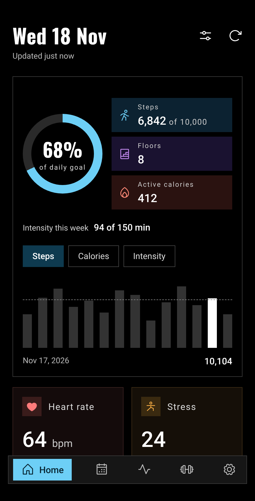
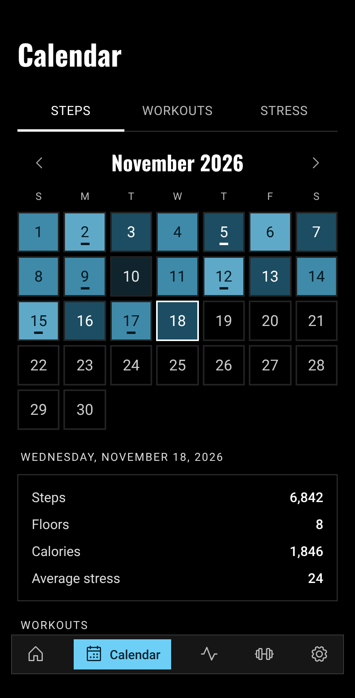
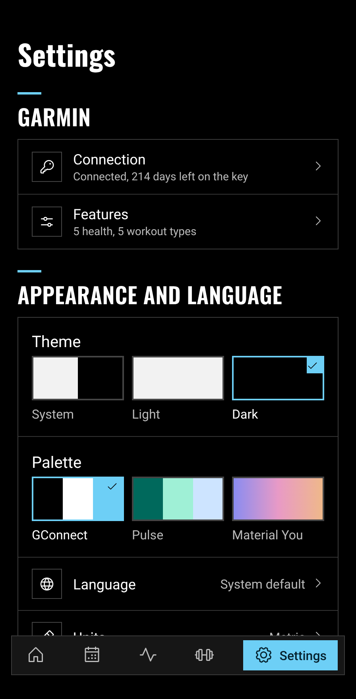

GPulse
A better look at my Garmin workouts and stats. A read-only dashboard that keeps the original's design language, modernized, and reads my account through Garmin's Personal API.
Why it exists
Garmin Connect has my data, but I don't like working in it. Setting it up and finding the one metric I need is a quest. GPulse is the same data with a clearer layout and better stats of my workouts. I kept the original's design language and modernized it. It is an independent project, not made or endorsed by Garmin.
Some of the original's numbers also don't match reality. Its fitness age depends on BMI, and it points at an ideal BMI I will never reach. And to read its running stats I had to flip between a page explaining what each stat means and the page with my actual numbers. GPulse fixes both.
What it does
A Home you arrange
A hero card with the day's step ring, floors, calories and switchable 14-day charts, tiles for each health feature, the week's workouts and recent workouts. Blocks can be reordered or hidden, so the metrics I need are on the first screen.
Workouts, read in place
Records, per-workout figures, heart-rate zones and running dynamics. Each stat carries a good, OK or needs-work reading right beside it, so there is no switching to a separate page to learn what it means.
A fitness age you can move
The original ties fitness age to a BMI target that was never realistic for me. GPulse adds granular steps: whole BMI points below today, the body weight each step means, and the estimated gain, so progress is something I can actually reach.
Health and calendar
Sleep, heart rate, stress, breathing, HRV, weight and more, each with a day-by-day chart, and only for data your account returns. A month calendar by steps, workouts or stress.
Three palettes
GConnect is black and white with a Candy Blue accent, the closest to the original's look. Pulse is a deep teal with mint and pale blue. Material You takes its colors from the phone's wallpaper. Each works in light and dark, and units switch between metric and imperial.
Your data stays yours
The key is stored encrypted on the phone. Everything fetched can be saved as a zip and loaded back from Settings.
Screens
Sample data, not my own stats.




How it is built
Not a direct line
GPulse does not talk to the watch. The data goes watch, Garmin Connect, Garmin's servers, Personal API, and only then reaches the app, so it is as current as the watch's last sync. The API is also not that detailed (no GPS track, so no workout map, and some data types come back empty), but it does the job.
Setup with a key
You create a Personal API key in Garmin Connect and paste it into the app. The key is stored encrypted with a key from the Android Keystore, and the short-lived bearer token Garmin issues for it is requested again when needed. Garmin does not report the key's expiry, so the app stores the day itself and reminds you 14 days, 3 days and one day before it stops working.
Refreshing
Data refreshes when the app opens (if the last fetch is over 3 minutes old), in the background about every 6 hours with WorkManager, and on demand. Each refresh fetches only what changed, with a few days of overlap, and up to a year on the first run.
Raw responses, parsed on read
Garmin's responses are stored as they came, one file per data set, and parsed when read, so a parser fix needs no new download. Parsers are checked against saved sample responses in a plain JVM module with unit tests.
Modules
A multi-module Kotlin project: :core:garmin holds the API client and parsers, :core:data the encrypted key store, cache and refresh logic, :core:designsystem the themes and charts, and each screen area is its own feature module. Features never depend on each other.